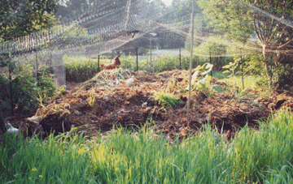

| These were my first chickens, four hens and two roosters. |
||||||||||||
| Chickens Chickens will move right into your heart! Endearing personalities, fun to watch and smart. For years I had large vegetable and flower gardens. I had never thought about raising chickens. A good friend kept pestering me about getting chickens, as she really loved her flock. One day she called saying a hen came out of the bushes with six chicks. She wanted me to have the chicks. I knew nothing about raising chickens, so with her help we planned and my husband built a small portable coop with roosts, nesting boxes, a door to close at night to keep them safe and a roof that lifted up on one side to make cleaning easy. With handles and wheels it moved like a big wheelbarrow. To make a pen to contain the chicks, I used chicken wire fencing and posts. I quickly found out that the chicks would fly from their house roof over the fence, so I put bird netting over the pen. Every several days, I set up a new area, and moved the house, when the chicks were in at night. They woke up to a new yard! The chicks were small so they did not need a large area to start. |
||||||||||||
| Chickens are easy animals to start raising. The start up equipment is minimal: housing, fencing, and containers for feed, water, grit and dusts baths. Build new or modify structures and resources you have. Everyone’s set ups are unique and personal. Using a permanent house, chickens can be managed free range, or kept in a chicken-wire fenced pen with bird net above. With a portable house and electric poultry fencing (nets) they can be moved around a yard or field. Chickens are creatures of habit, so new things can confuse them. If you move their house and pen, do it at night while they are inside sleeping. In the evening, chickens go to bed, “roost” early. All you have to do is close their door to protect them from predators. Chickens taking a dust bath |
||||||||||||
| As the chickens got older, I created pens with mulch piles for them to scratch and explore. It kept them very busy. | ||||||||||||
|  | ||||||||||||
| Chickens are insectivores. The chicken’s favorite foods are bugs, insects and worms found in mulch and soil. Scratching in mulch and dirt is their first choice to find food. They also eat grass, weeds, and garden plants such as kale, cabbage, most greens, tomatoes, and fruit. My friend’s grandfather fed whole grains (corn, oats, barley), as he felt they were more nutritious than cracked grains. To further increase the nutritional value of the grains, I now soak and sprout grains for chickens and geese. The seeds are started in a large mixing bowl and soaked for 12 hours, then the water is drained. Once a day the seeds are rinsed and drained. Seeds can be used as feed with small 1/2” sprouts, or thinly spread out in a pan to grow larger. To have a continuous supply, start new seeds every day. Warmer temperatures (70°+) make them grow faster. Chickens need fresh water for drinking, grit for grinding food in their gizzard, and a source of minerals for their egg shells. |
||||||||||||
| Chicken Homes | ||||||||||||